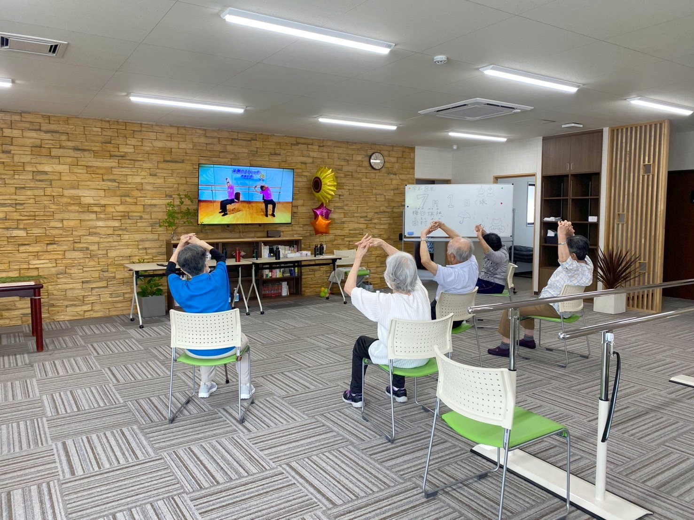

A4ポスター（セブンイレブン掲示用）
印刷設定：A4・縦・カラー／余白「なし」または「最小」／
「背景のグラフィック」をON
／ヘッダーとフッターはOFF
印刷 / PDF保存
リハビリ専門デイサービス
poem de reha
安 積 店
動くから
変わる
マシーントレーニングと楽しい脳トレで、「動ける身体」を取り戻す。
半日型のリハビリ専門デイサービスです。
2026年6月 安積町にオープン

約80
%
介護度の維持・向上率
220
名
3年間のご利用者数
安積店と同形態のリハビリ専門デイサービス
「ポエム開成」（郡山市）3年間の実績
です。
※施設入所等で利用終了された方の区分変更申請は除く
01
マシーントレーニング
高齢者の体格・筋力に配慮した専用マシン9種。負荷を細かく調整でき、無理なく安全に。
02
楽しい脳トレ
間違い探しやクイズ形式。身体と頭を同時に使う二重課題で、認知機能の維持をサポート。
03
AI解析プログラム
常駐の柔道整復師が、AIの解析結果も活用してその日に最適な運動メニューをご提案。
営業時間
午前の部 9:00〜12:05
午後の部 13:25〜16:30
月〜金（祝日も営業）／土・日・年末年始休業
対 象
要支援1・2／要介護1〜5の方
要支援：郡山市・須賀川市／要介護：原則郡山市
料 金
介護保険適用（1〜3割負担）
詳しくはお気軽にお問い合わせください
送 迎
ご自宅まで送迎あり
郡山市・須賀川市（エリア外もご相談ください）
見学・
無料体験
受付中
TEL
024-954-5586
担当：豊嶋（とよしま）／ 体験は1回無料 ／ ご家族・ケアマネジャーの方もどうぞ
介護保険のことがよく分からない方も、まずはお電話ください
詳しい料金・写真はWebで
poem de reha 安積店
〒963-0102 郡山市安積町笹川字四角担3-1
運営：株式会社はなひろ https://info.hana-hiro.com/poem-asaka.html